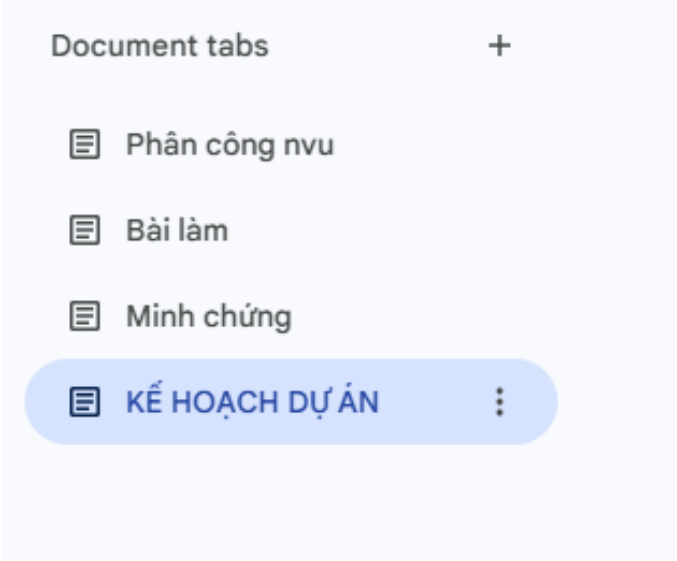

Mục tiêu & Tóm tắt Thành thạo các công cụ hợp tác trực tuyến và thể hiện năng lực quản lý, điều phối cá nhân trong dự án nhóm.
Yêu cầu thực hiện:
"Qua dự án này, mình nhận thấy việc lựa chọn đúng công cụ và thiết lập quy trình làm việc rõ ràng ngay từ đầu giúp tối ưu hóa hiệu suất làm việc nhóm, đồng thời rèn luyện kỹ năng tự quản lý cá nhân rất hiệu quả."
Xem file sản phẩm gốcTên dự án: AI trong ung thư học – Từ chẩn đoán chính xác đến phẫu thuật thông minh
Vai trò của tôi: Viết phần Thách thức của AI (chi phí, dữ liệu, dương tính giả, pháp lý)
Thời gian thực hiện: Tuần 1 (7/4 – 14/4/2026)
Nhóm tôi gồm 5 thành viên, thực hiện dự án nghiên cứu và thiết kế slide thuyết trình về ứng dụng của AI trong ung thư học. Chúng tôi sử dụng bộ công cụ tối giản nhưng đáp ứng đủ 3 nhóm chức năng theo yêu cầu.
| Nhóm chức năng | Tên công cụ | Mục đích sử dụng |
|---|---|---|
| Soạn thảo cộng tác + Quản lý nhiệm vụ | Google Docs | Viết nội dung, tạo bảng phân công, theo dõi tiến độ. |
| Lưu trữ & chia sẻ file | Google Drive | Lưu slide, tài liệu tham khảo, phân quyền truy cập. |
| Giao tiếp nhóm | Zalo + Google Meet | Thảo luận hằng ngày, họp trực tuyến, nhắc deadline. |
Dự án của nhóm được chia thành các phần chính dựa theo cấu trúc của slide thuyết trình:
| Phần | Nội dung chi tiết |
|---|---|
| 1 | Vấn đề ung thư toàn cầu (số liệu VN và thế giới). |
| 2 | AI phát hiện khối u trên ảnh (CADe/CADx, CHIEF 94%, PathChat 90%). |
| 3 | AI Agent & NLP (phân loại bệnh nhân, tóm tắt bệnh án, chatbot Zalo). |
| 4 | AI định vị ranh giới u trong mổ (Robot Modus V Synaptive). |
| 5 | Thách thức của AI (chi phí, dữ liệu training, dương tính giả, trách nhiệm pháp lý). |
| 6 | Giải pháp (PPP, Federated Learning, AI-as-a-Service, kho dữ liệu ung thư VN). |
| 7 | Tương lai & kết luận. |
Tôi đã tạo một bảng phân công nhiệm vụ ngay đầu file Google Docs chung của nhóm. Bảng có 5 cột: STT – Nhiệm vụ – Người phụ trách – Deadline – Trạng thái.
| STT | Nhiệm vụ | Người phụ trách | Deadline | Trạng thái |
|---|---|---|---|---|
| 1 | Tìm hiểu số liệu ung thư toàn cầu & VN | Nguyễn Quốc Cường | 7/4 | ✅ Đã hoàn thành |
| 2 | Tổng hợp các ứng dụng AI phát hiện khối u (CADe, CHIEF, PathChat) | Lưu Gia Bình | 7/4 | ✅ Đã hoàn thành |
| 3 | Viết phần Thách thức của AI (chi phí, dữ liệu, dương tính giả, pháp lý) | Nguyễn Hoàng Văn | 9/4 | ✅ Đã hoàn thành |
| 4 | Viết phần Giải pháp (PPP, Federated Learning, AI-as-a-Service) | Lâm Tuấn Đạt | 9/4 | ✅ Đã hoàn thành |
| 5 | Viết phần Tương lai & Kết luận | Lê Gia Bảo | 10/4 | ✅ Đã hoàn thành |
| 6 | Tổng hợp slide Canva / PowerPoint | Cả nhóm | 12/4 | ✅ Đã hoàn thành |
| 7 | Tổng hợp báo cáo cá nhân bài tập 1 | Nguyễn Quốc Cường | 14/4 | ✅ Đã hoàn thành |
* Tôi đã cập nhật trạng thái nhiệm vụ ít nhất 3 lần trong tuần (từ "⏳ Chưa bắt đầu" → "🔄 Đang thực hiện" → "✅ Đã hoàn thành").
Tôi đã trực tiếp viết phần "Thách thức của AI" dựa trên nội dung từ slide (trang 7-9), bao gồm:
Tôi cũng tham gia chỉnh sửa, bổ sung phần "Giải pháp" dựa trên góp ý của các thành viên.
Tôi đã thiết lập cấu trúc thư mục trên Google Drive một cách khoa học và áp dụng các quy tắc sau:
[Nội dung]_[Phiên bản]_[Ngày] hoặc theo chức năng.
| Công cụ | Hiệu quả với cá nhân tôi |
|---|---|
| Google Docs | Vừa viết nội dung chuyên sâu (thách thức của AI) vừa theo dõi tiến độ nhóm. Lịch sử phiên bản giúp tôi không sợ mất nội dung khi chỉnh sửa chéo. |
| Google Drive + Canva + Kiwi AI + AI Tools (Gemini, Deepseek, GPT) | Lưu trữ slide gốc và tài liệu tham khảo tập trung, dễ tìm kiếm. Đa dạng tác vụ AI giúp tìm kiếm nguồn thông tin phong phú và nhanh chóng. |
| Zalo + Google Meet | Zalo phù hợp để nhắc deadline nhanh và gửi file. Google Meet phù hợp cho các buổi họp có cấu trúc và chia sẻ màn hình slide. |
| Thách thức | Cách tôi giải quyết |
|---|---|
| 1. Thành viên hiểu sai nội dung thuật ngữ AI (ví dụ: nhầm lẫn giữa CHIEF với PathChat). | Tôi tạo một mục "Chú thích thuật ngữ" ngay đầu Google Docs, giải thích rõ CHIEF (Harvard, Nature 2024), PathChat (Đại học Y Harvard, 2024), CADe/CADx (Bệnh viện 199). Sau đó tag từng người vào Zalo để đọc kỹ lại. |
| 2. Xung đột nội dung khi hai người cùng sửa một đoạn trong Google Docs. | Tôi yêu cầu cả nhóm chuyển sang chế độ Suggesting (gợi ý) thay vì Editing. Tôi – với vai trò nhóm trưởng – sẽ xem xét duyệt hoặc từ chối các đề xuất chỉnh sửa đó để tránh đè nội dung. |
| 3. Một thành viên không có thiết bị máy tính để họp Google Meet. | Tôi đề nghị thành viên đó tham gia bằng ứng dụng điện thoại, đồng thời cử một người ghi biên bản (meeting minutes) trực tiếp trên Google Docs để họ có thể đọc lại các quyết định sau cuộc họp. |